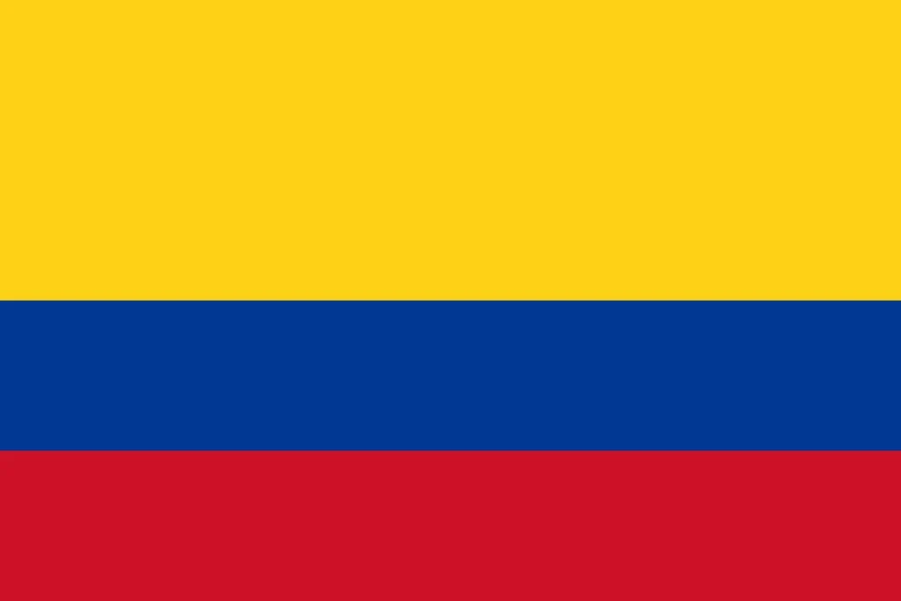

1. Germany’s 7-1 Massacre
It’s July 8, 2014, and the Mineirão in Belo Horizonte is a cauldron of noise and heat—58,141 fans packed in tight, the Brazilian sun beating down, the air thick with samba dreams. The hosts are chasing a sixth World Cup, but Germany’s got other plans. Joachim Löw’s lads have been rolling like a freight train—kicked off with a 4-0 demolition of Portugal, Thomas Müller bagging a hat-trick like it’s nothing, grinning ear to ear as Cristiano Ronaldo’s face sours. Then Ghana gave ‘em a scare, 2-2, a sweaty tussle in Fortaleza, before Müller’s cool finish nudged the USA aside 1-0 in Recife, the rain lashing down but not slowing him a bit.
The knockouts only sharpened their edge—Algeria pushed ‘em to extra time in Porto Alegre, 2-1, André Schürrle and Mesut Özil clawing through after 120 minutes of grit; then France in the quarters, a tight 1-0 at the Maracanã, Mats Hummels rising like a colossus to head home a Toni Kroos free-kick, the French flair snuffed out. Now it’s Brazil, Neymar’s out with a busted back, and the yellow shirts are twitching—11 minutes in, Müller’s lurking at a corner, Kroos swings it, and there’s the tap-in, 1-0. The crowd’s still buzzing, thinking it’s a hiccup, but mate, they’ve no idea what’s coming.
It’s like the gods flipped a switch—23rd minute, Miroslav Klose ghosts past Julio César, 2-0, cool as you like, snatching Pelé’s World Cup goal record at 16, a sly wink to the stands as Brazil’s defense flaps. A minute later, Kroos unleashes a venomous half-volley, 3-0, the net’s still shaking when he strikes again at 26th—4-0, César sprawling, the Mineirão’s roar turning to a stunned murmur. Then 29th, Sami Khedira strolls through a gap you could drive a bus through, 5-0—18 minutes, five goals, Brazil’s a smoking ruin. The crowd’s silent now, kids crying in the stands, yellow flags drooping. Schürrle’s not done—comes off the bench, bangs in two more, 69th and 79th, 7-0; Oscar’s late flick at 90th, 7-1, feels like a plea for mercy.
“We smelled blood,” Müller says later, sipping a beer, that glint in his eye, and you believe him—18 shots, Brazil’s samba shredded to bits. Five nights on, it’s the Maracanã final, Argentina in their sights—extra time, 113th minute, Götze chests a Schürrle cross and volleys it home, 1-0, Germany’s fourth star stitched on. Back at the pub, the tellies are stuck on repeat—Portugal’s thrashing, Kroos’ rockets, Klose’s record, that 7-1 madness. Mineirão’s hush still echoes—Brazil’s faithful stumble out, tears streaking, while Germany’s boys bounce like they’ve won the lottery. “The world saw us,” Götze roars, arms wide, and Löw’s just beaming, “This is ours, lads.”
It’s six wins, one draw, a campaign of pure steel—David Luiz is still choking up, “Unreal,” he mutters, hair wild, eyes red. Neymar’s on the sidelines, watching the clips later, shaking his head, “Mental edge, that’s what they had.” Down the bar, the debate’s raging—“Best World Cup side ever?” one lad shouts, slamming his pint. The replays keep coming—Götze’s dagger, Müller’s grin, Brazil’s dust—and it’s a sledgehammer of a story. Over a cold one, it’s the yarn that never dies—Germany’s Brazilian blitz, a massacre for the ages, the kind of tale that’ll have the pub buzzing ‘til last call.

2. Messi’s Dance Falls Short
It’s July 13, 2014, and the Maracanã in Rio is a cathedral of noise—74,738 fans, a sea of blue and white, Lionel Messi hauling Argentina toward glory against a German wall. He’s been untouchable, a little magician in a big tournament—kicked off against Bosnia in this very stadium, 2-1, curling one into the top corner like it’s a Sunday kickabout, leaving the keeper clutching air. Then Iran in Belo Horizonte, 1-0, a 91st-minute screamer that ripped through the humid night, the crowd erupting as if the roof might lift off. Nigeria next, 3-2 in Porto Alegre—Messi bangs in two, one a free-kick that bends like a dream, the other a darting run and finish, pure class.
The knockouts only crank it up—Switzerland in São Paulo, last 16, 1-0, extra time ticking down to nothing, 118th minute, Messi dances through, slips it to Ángel Di María, who buries it, the bench spilling onto the pitch. Quarters against Belgium in Brasília, 1-0, quieter this time, but he’s the heartbeat— Gonzalo Higuaín’s early poke owes everything to Messi’s shadow looming over the defense. Semis, Netherlands in São Paulo—0-0, a cagey slog, penalties loom, Argentina nail 4-2, Messi’s the first to step up, cool as ice, staring down Jasper Cillessen. “This is mine,” he’s whispering to himself—four goals already, a nation hanging on his every twitch.
Final night, Maracanã again—Germany’s buzzing, fresh off that 7-1 horror show, but Argentina smell blood too. Twentieth minute, Messi splits the backline, Higuaín’s through—he skies it, wide, a groan rolls through the stands like thunder. Half-time’s a blur, then 47th—Higuaín’s in again, beats Manuel Neuer, but the flag’s up, offside, the roar dies in throats. It’s tight, brutal—Germany press, Argentina counter, Messi’s everywhere, darting, weaving, but the net won’t ripple. Extra time—113th minute, Götze chests and volleys, 1-0, a dagger in the gut. Last gasp, 120th—Messi’s got a free-kick, 25 yards, the world holds its breath—he sends it sailing over, nine shots, no joy, the whistle blows.
“It slipped away,” he sighs later, Golden Ball in hand but eyes hollow—no cup, just echoes. Pub screens are relentless—Nigeria’s brace, Iran’s bolt, Götze’s sting—six wins, one crushing loss. “He’s a freak,” Löw says, tipping his cap, while the clips keep rolling: Bosnia’s curl, that final miss. Maracanã’s German now—Messi stares at the turf, Argentina’s dream fades into the Rio night. “We had it,” Di María growls, voice cracking, and down the pub, it’s all anyone can talk about—“So close, mate, so bloody close!” Alejandro Sabella’s slumped, “Ours slipped,” he mutters, shaking his head.
It’s a gut punch that lingers—over a pint, you feel it, Messi’s waltz cut short, brilliance bottled. “Gutsy lad,” Müller says, raising a glass, and the replays haunt—Switzerland’s assist, Higuaín’s fluffs, that free-kick drifting into the stands. “Tough one,” Kroos shrugs, but you can’t look away—six games of magic, one night of agony, a tale that’s pure pub gold. The bar’s buzzing, lads arguing—“He deserved it, didn’t he?”—and the footage loops, Messi’s ghost hovering over every frame, a near-miss that’ll echo for years.

3. Brazil’s Mineirão Meltdown
It’s July 8, 2014, and the Mineirão in Belo Horizonte is a furnace of hope—58,141 fans, yellow shirts everywhere, Brazil chasing that sixth star under a blazing sun. Neymar’s out, spine cracked from the Colombia game, but the faithful still believe—Luiz Felipe Scolari’s got ‘em dreaming big. They’d kicked off in São Paulo, 3-1 over Croatia, Neymar’s brace lighting the fuse, one a cool slot, the other a pen that had the crowd bouncing. Mexico in Fortaleza, 0-0, a stutter—Guillermo Ochoa’s hands like a brick wall—but then Cameroon in Brasília, 4-1, Neymar untouchable, two goals, pure fire, Fred chipping in too.
Knockouts kept the pulse racing—Chile in the last 16 at Mineirão, 1-1, David Luiz’s rocket canceled out by Alexis Sánchez, penalties looming—3-2, Julio César’s gloves clutch two, the stadium shakes. Quarters in Fortaleza, Colombia, 2-1—Thiago Silva pokes early, Luiz bangs a free-kick, James Rodríguez pulls one back, but Neymar’s stretchered off, a nation holds its breath. “Destiny’s ours,” Scolari’s saying, chest puffed, and the fans are with him—until Germany stroll in, all calm menace. Eleventh minute, Müller’s lurking, Kroos swings a corner, tap-in, 1-0—the yellow sea ripples, nerves jangling, but they’re still singing.
Then it’s a nightmare—23rd minute, Klose glides in, 2-0, César flailing, the record books shifting under Pelé’s nose. Twenty-fourth, Kroos smashes a half-volley, 3-0, a blur of white shirts; 26th, Kroos again, 4-0, Brazil’s backline a shambles, César’s on his knees. Twenty-ninth, Khedira waltzes through, 5-0—18 minutes, five goals, the Mineirão’s a tomb, kids sobbing, flags limp. Schürrle’s off the bench, hungry—69th, a crisp finish, 7-0; 79th, another, 7-0 still, relentless. Oscar’s 90th-minute jab, 7-1, feels like a whisper in a hurricane—18 shots faced, samba snuffed out cold.
“They tore us apart,” David Luiz sobs later, hair wild, eyes lost—pub screens loop the horror, Cameroon’s romp fading into this abyss, five wins, one draw, one collapse that scars a nation. “Madness,” Müller’s chuckling over a beer, and the clips keep coming—Chile’s fight, then 7-1 hell, Kroos’ venom, Klose’s cool. Mineirão’s silent now—tears streak faces, Germany’s lads strut like they own the place. “For the fans,” Fred mumbles, head down, while Scolari’s slumped, “Ours died out there.” Down the pub, it’s chaos—“Seven bloody one!” a lad yells, pint sloshing, and the replays sear—Neymar’s spark, then this ruin.
It’s raw, mate—a wound that festers, Brazil’s fall etched in every frame. “Mental,” Messi mutters, watching later, and over a pint, it’s brutal—a nation gutted, a story that twists the knife. The bar’s alive—“Worst ever?” one bloke shouts, another fires back, “They’ll never live it down!”—and the footage rolls, Luiz’s despair, Germany’s dance, a meltdown that’s pub legend, the kind of tale you’ll still be chewing over when the lights flicker off.

4. Netherlands’ Bronze Rampage
It’s July 12, 2014, and Brasília’s Estádio Nacional is simmering—68,034 fans, Netherlands facing Brazil for bronze, Louis van Gaal’s crew out to leave a mark. They’d kicked off in Salvador like a thunderclap—Spain, the ’10 champs, torn apart 5-1, Robin van Persie’s diving header a thing of beauty, soaring over Iker Casillas, then Arjen Robben’s tearing ‘em up, Memphis Depay sealing it late. Australia in Porto Alegre, 3-2—Robben’s dart, van Persie’s venom, Depay’s spark in a wild scrap; then Chile in São Paulo, 2-0, Leroy Fer’s nod, Depay again, cool and clinical.
Knockouts turned brutal—Mexico in Fortaleza, last 16, 2-1, down ‘til the 88th, Wesley Sneijder’s screamer, Klaas-Jan Huntelaar’s pen in the 94th, the heat choking but not breaking ‘em. Quarters in Salvador, Costa Rica—0-0, 120 minutes of Navas’ heroics, penalties—Tim Krul’s subbed on, saves two, 4-3, Orange roar. Semis in São Paulo, Argentina—0-0 again, pens, 4-2 loss, Messi’s lot edge it, but van Persie’s still growling, “We’ve got fire left.” Five wins, two draws, 15 goals—a campaign of swagger, and now Brazil, wounded from 7-1, ripe for the picking.
Third minute, Thiago Silva hauls Robben down—penalty, van Persie steps up, slots it cool as you like, 1-0, Brazil’s heads dip. Seventeenth, Daley Blind’s lurking, pounces on a loose ball, smashes it, 2-0—the hosts are creaking, the Orange faithful bouncing. Ninety-first, Georginio Wijnaldum ices it, 3-0, a tidy finish—10 shots, bronze in the bag, Brazil’s misery doubled. “We ran ‘em ragged,” Robben’s grinning later, sweat still dripping, and the pub’s alive—Spain’s thrashing loops, then this romp, van Persie’s leap, Brazil’s dust. “Ours,” van Gaal beams, clapping the lads off, six wins, a tally that sings.
Brasília’s awash in Orange—Netherlands strut, Brazil slink away, the 7-1 scars ripped open. “For the faithful,” Sneijder shouts, fist pumping, and down the pub, it’s electric—“5-1 vibes all over again!” a lad yells, pint raised. “Pure fire,” Depay’s laughing, and the replays roll—Mexico’s late sting, Costa Rica’s pens, this demolition. David Luiz mutters, “Ruthless,” head down, while the clips keep coming—Robben’s runs, van Persie’s header, a bronze rampage that’s got the bar buzzing. “Bold,” Messi nods later, sipping a drink, and over a beer, it’s a cracker—the Netherlands’ last laugh, a tale that lifts the roof.
It’s a story of swagger—six games of brilliance, one final romp, pub gold that’ll have ‘em shouting ‘til the taps run dry. The footage loops—Blind’s bang, Wijnaldum’s cool, Brazil’s fade—and it’s the kind of yarn that sticks, a bronze medal won with teeth and flair.

5. James Rodríguez Steals the Show
It’s June 28, 2014, and the Maracanã in Rio is a furnace—73,804 fans, Colombia facing Uruguay in the last 16, James Rodríguez ready to ignite. He’s been a revelation—kicked off in Belo Horizonte, Greece 3-0, a cheeky poke in the 36th, strolling through like it’s a park game, Pablo Armero and Teófilo Gutiérrez chipping in. Ivory Coast in Brasília, 2-1—70th minute, James unleashes a thunderbolt, roof of the net, Juan Quintero’s opener a distant memory. Japan in Cuiabá, 4-1—55th minute, he dances past three, slots it cool, five goals already, Jackson Martínez and Juan Cuadrado piling on.
“I’m the spark,” he’s smirking, all 22 years of him, and now Uruguay—Cavani and Suárez out, but they’re still snarling. Twenty-eighth minute, the ball’s looping high—James chests it down, spins, 25 yards out, volleys it—roof of the net again, 1-0, a golazo that stops the world, Fernando Muslera rooted, the Maracanã erupting like a volcano. You can feel it—Colombia’s faithful lose their minds, yellow flags waving, kids screaming in the stands. Fiftieth minute, Cuadrado nods a corner, James is there, taps it in, 2-0—10 shots, Uruguay’s done, quarters calling, sixth goal in the bag, Golden Boot gleaming.
“This is my turf,” he roars later, sweat dripping, and the pub’s a madhouse—telly screens explode with that volley, a thing of beauty, looped a hundred times before last orders. Quarters hit Fortaleza, Brazil—2-1 loss, Thiago Silva and David Luiz strike, James pulls one back from the spot, but Neymar’s knee to his thigh ends the dream, Colombia bow out. “Ours,” José Pékerman’s beaming anyway, clapping the lad off—over a pint, it’s pure dazzle, six goals, a star born in the Brazilian sun. “Class,” Suarez mutters, watching from the stands, and the clips flood—Japan’s rout, Ivory Coast’s venom, Maracanã magic.
Rio’s alive—Colombia dance, Uruguay slink off, the faithful chanting James’ name ‘til their throats give out. “For the people,” he shouts, arms wide, and down the pub, it’s chaos—“Golazo, mate, bloody golazo!” a lad yells, spilling his beer. “Pure fire,” Cuadrado’s grinning, and the replays roll—Greece’s poke, Brazil’s sting, that volley etched in gold. The bar’s buzzing—“He’s the real deal,” one bloke insists, another nods, “Twenty-two and running the show!”—and it’s a breakout anthem, James’ shine lighting up every frame.
Over a cold one, it’s the tale that dazzles—five games, six goals, a kid stealing the World Cup stage. “Bold,” Robben says later, tipping his cap, and the footage loops—Cuadrado’s nod, James’ spin, a star rising in Rio’s heat, pub gold that’ll echo ‘til the lights dim.
6. Costa Rica’s Cinderella Run
It’s July 5, 2014, and Recife’s Arena Pernambuco is humming—41,340 fans, Costa Rica facing Netherlands in the quarters, a minnow turned giant-killer. They’d kicked off in Fortaleza, group of death—Uruguay 3-1, Joel Campbell’s spark ignites it, a crisp finish, Bryan Ruiz and Óscar Duarte pile on, Cavani’s pen a footnote. Italy in Recife, 1-0—Ruiz nods a beauty, Buffon stranded, the Azzurri stunned. England in Belo Horizonte, 0-0—a yawn, sure, but Costa Rica top the group, three giants tamed, jaws dropping worldwide.
Last 16 in Salvador, Greece—1-1, Ruiz strikes again, Sokratis levels late, 120 minutes grind—penalties, 5-3, Keylor Navas’ gloves snatch one, the Ticos erupt. “We’re believers,” Jorge Luis Pinto’s grinning, and now Netherlands—van Persie, Robben, Sneijder, the lot. It’s a siege—0-0, Navas a fortress, diving, clawing, eight shots faced, Robben’s twisting runs snuffed out, 120 minutes of pure guts. Penalties loom—van Gaal pulls Jasper Cillessen, throws in Tim Krul—saves two, 4-3, Costa Rica bow out, but heads high.
“We shook the world,” Campbell roars later, chest puffed, and the pub’s buzzing—telly screens hum with Uruguay’s fall, Italy’s scalp, Navas’ claws—faithful lose it, pint glasses clinking. Three wins, two draws, five goals—quarters deep, a fairy tale carved in Brazilian dirt. “Ours,” Navas beams, wiping sweat, and over a beer, it’s magic—giants felled, a nation of five million punching way above. “Tough nuts,” van Gaal mutters, tipping his cap, and the clips flood—England’s blank, Greece’s pens, Netherlands’ sting.
Recife’s Orange now—Costa Rica exit proud, the faithful chanting ‘til the buses roll out. “For the dreamers,” Ruiz shouts, voice hoarse, and down the pub, it’s electric—“Navas, legend!” a lad yells, slamming the table. “Pure heart,” Pinto’s grinning, and the replays roll—Campbell’s spark, Navas’ wall, a run that rewrote the script. “Bold,” Messi nods later, sipping a drink, and over a pint, it’s a heart-stealer—underdogs soaring, a tale that lifts the roof.
It’s a story of grit—five games, three scalps, a miracle in the sun. The footage loops—Ruiz’s nod, Navas’ saves, Netherlands’ edge—and it’s pub gold, Costa Rica’s Cinderella run, a yarn that’ll have ‘em cheering ‘til the barman calls time.
7. USA’s Gritty Fight
It’s July 1, 2014, and Salvador’s Arena Fonte Nova is a sweatbox—51,227 fans, USA facing Belgium in the last 16, Jürgen Klinsmann’s scrappers ready to brawl. They’d kicked off in Natal, Ghana 2-1—Clint Dempsey bangs one in 30 seconds, John Brooks nods an 86th-minute winner, the Yanks erupt. Portugal in Manaus, 2-2—Jermaine Jones’ screamer, Dempsey’s gut-busting finish, Ronaldo’s late cross snatches a draw, the Amazon heat choking ‘em. Germany in Recife, 1-0—Müller’s poke, rain lashing, but the USA grind through, group stage done.
“We’re battlers,” Tim Howard’s growling, beard dripping, and now Belgium—Hazard, De Bruyne, Lukaku, a red tide. Ninety minutes, 0-0—Howard’s a wall, 16 saves, a record haul, diving, clawing, Hazard’s twists denied, Lukaku’s power blunted, the crowd roaring every block. Extra time—93rd minute, De Bruyne breaks through, 1-0; 105th, Lukaku muscles in, 2-0—USA reeling, but not dead. One hundred seventh, Julian Green volleys a Michael Bradley chip, 2-1—clock’s ticking, they push, 17 shots faced, but it’s over, Belgium through.
“Left it all there,” Howard roars later, voice hoarse, and the pub’s alive—telly screens hum with Ghana’s win, Portugal’s draw, Howard’s hands—faithful go wild, “USA!” chants bouncing off the walls. Three wins, one draw, one loss, five goals—out with pride, a fight that sings. “Ours,” Dempsey beams, clapping the lads off, and over a pint, it’s raw—underdogs snarling, a nation hooked. “Beasts,” Lukaku mutters, nodding respect, and the clips flood—Brooks’ nod, Howard’s wall, Belgium’s sting.
Salvador’s Belgian—USA bow out, chins up, the faithful roaring ‘til the lights dim. “For the States,” Brooks shouts, fist raised, and down the pub, it’s chaos—“Howard, mate, bloody Howard!” a lad yells, spilling his drink. “Iron,” Klinsmann’s grinning, and the replays roll—Jones’ screamer, Green’s spark, a fight that twists the knife. “Bold,” Robben nods later, sipping a beer, and over a cold one, it’s a warrior’s tale—grit in the Brazilian sun, pub gold that’ll echo ‘til last call.
It’s a story of heart—five games, one epic stand, a scrap that lifts the roof. The footage loops—Dempsey’s gut, Howard’s 16, Belgium’s edge—and it’s the kind of yarn that keeps the bar buzzing, USA’s fight etched in every frame.

8. Chile Topples the Champs
It’s June 18, 2014, and the Maracanã in Rio is a storm—74,101 fans, Chile facing Spain, the ’10 kings teetering on the edge. Jorge Sampaoli’s lads are buzzing—kicked off in Cuiabá, Australia 3-1, Alexis Sánchez’s spark lights it, a darting run and finish, Jorge Valdivia and Jean Beausejour piling on. Now Spain, tiki-taka fraying—Iker Casillas shaky, Xavi off the boil. Twentieth minute, Sánchez tears down the right, Charles Aránguiz flicks it, Eduardo Vargas pounces—1-0, Casillas flapping, the net ripples, Chile’s faithful erupt, red flags waving wild.
Forty-third, Sánchez bends a free-kick—Casillas punches weak, Aránguiz is there, slams it home, 2-0—eight shots, Spain staggering, the champs reeling in the Rio heat. “We smelled weakness,” Sánchez grins later, eyes gleaming, and the pub’s a madhouse—telly screens explode with Spain’s fall, Chile’s fire, that Vargas poke looped ‘til the barman’s hoarse. Spain push—Iniesta’s threading, Diego Costa’s lumbering, but it’s no use—Casillas stranded, Claudio Bravo cool as ice, 2-0 holds, ’10 kings crash out, group stage dust.
“We hunted ‘em down,” Vargas roars, chest puffed, and it’s a campaign—three wins, one loss later in Belo Horizonte, Brazil, 1-1, pens 3-2, 10 goals total, a South American storm. “Ours,” Sampaoli beams, clapping the lads off, and over a pint, it’s the upset—tiki-taka torched, a giant slain. “Gutsy,” Xavi mutters, head down, and the clips flood—Australia’s warm-up, Vargas’ poke, Maracanã’s sting. The bar’s buzzing—“Spain’s gone!” a lad yells, pint sloshing, and the replays roll—Aránguiz’s bang, Spain’s rubble.
Maracanã’s wild—Chile strut, Spain slink off, the faithful chanting ‘til their voices crack. “For the people,” Aránguiz shouts, arms wide, and down the pub, it’s electric—“Champs dethroned!” a bloke roars, slamming the table. “Pure fire,” Bravo’s grinning, and it’s a giant-slaying epic—over a beer, it’s the shock that sings, Chile’s roar etched in every frame. “Bold,” Götze nods later, raising a glass, and the footage loops—Sánchez’s spark, Bravo’s cool, a tale that lifts the roof.
It’s a story of hunger—four games, one massive scalp, pub gold that’ll have ‘em shouting ‘til the lights dim. The replays keep coming—Vargas’ pounce, Spain’s fade—and it’s the kind of yarn that sticks, Chile’s coup in the Brazilian sun.